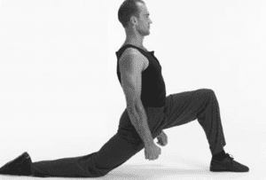
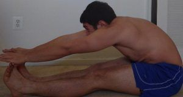
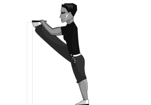
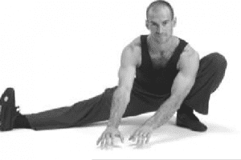
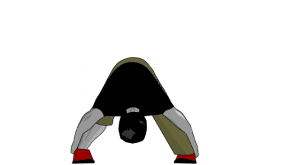
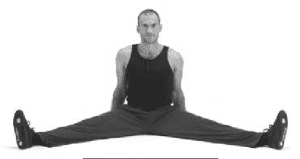

< < < Back
How To Train The Splits For Flexibility And Fighting – Return Of Kings
As I’ve previously discussed in these hallowed pages, I feel that flexibility is an aspect of physical fitness training that many men ignore, largely due to perceptions of it being “effeminate.” In those articles, I sought to debunk that narrow-minded belief, as well as advocating stretches one can do to generally improve one’s health and well-being. In my “relax into stretch” article, I discussed how that technique can be used for the ultimate stretch, the alpha and omega and standard bearer of flexibility: the split
Every man should incorporate splits in his workout for a variety of reasons: the increased flexibility and mobility, the training of willpower and tolerance to pain, increased power in striking for martial artists, and last but not least, the sex appeal. But undoubtedly, for the trainee in flexibility, the split seems an impossibly daunting task.
Having taught you how to stretch without literally forcing the muscle fibers to stretch (and thus risk tearing), I can now teach you a series of “intermediate” stretches that will train those muscles that are stretched in a split. These stretches should be done as a warm-up before actual split training.
First, the front split stretches:
The Kneeling Hip Flexor
When you are training the front split, the two predominant muscles being stretched are the hamstring of the front leg, and the hip flexor and gluteus of the back leg. Thus, it is imperative that you at least warm-up with stretches that specifically target those muscles.
To do the kneeling hip flexor stretch, kneel on the floor with one foot on the ground in front of you, and one knee behind you. Placing your hands at your sides, lean forward, stretching out the hip flexor of the hind leg.

Hold this until the pain subsides, then stop and switch legs. After a few sessions of this, you can increase the stretch by moving the back leg further back.
The Double Hamstring
The one you remember from elementary school. Sit down on the floor with your legs extended. Lock your knees and bend at the waist, touching the fingers to the toes.

Much like all stretches, hold until the pain subsides. After a few sessions, you can increase the stretch by touching the palms of your hands or your wrists to your toes, as I am doing in the picture
The Stretchkick
Common in martial arts curricula, this stretch is useful for both the front split and the side split. Stand approximately three feet from a shelf, Swedish ladder, or something similar (you can use a wall, but preferably use something that has levels, as it has lower rungs that you can utilize if you cannot get your leg all the way up). Keep your feet closed and parallel.
Stand upright and with a “hollow back” (i.e. not rounded), lift your leg up and put your heel on the wall, keeping the leg straight, your feet straight, and your hip parallel to the wall

Grasp the ball of the stretched foot with both hands. Lock both knees and keep your hips low—do NOT raise one hip or the other. Lean forward slightly, but keep the back straight, avoid torso or hip twisting. Pull the tip of the foot down, try to look at the bottom of your foot while keeping your head high and your back straight.
The ultimate goal of this stretch is to have your foot parallel to your head, but most likely you will not be able to do this immediately. This stretch can also be done with your side to the wall. and your foot turned 90 degrees from the other foot

Side Split Stretches
The front split is the easier of the two, which is why I focused on it first. But of course, for the sake of completion, the intimidating side split must be discussed as well.
The Half Side Split
This stretch, sometimes referred to as the Cossack stretch, is a stretch that opens up the hips and targets the muscles of the groin, both of which are predominantly hit in the side split.
Stand with your feet three shoulder widths apart, and bend on one leg. The other leg remains fully extended.
Touch the floor with both hands and press the inside of the thigh of your bent leg away with the corresponding elbow. Keep your back straight

Hold until the pain subsides, and try to open up the hips further by moving your body down. Then do the other side.
Wide Leg Toe Touch
This is not actually a touching of the toes, but the motion is the same. Standing up, spread your legs 2-3 shoulder widths. Lock the knees and bend forward, touching the floor with your hands. The back and arms should be straight. Hold until the pain subsides
Once you do this easily, the way to make it harder is to not move your feet farther apart, but rather to grab the calves and pull the upper body towards the legs. Pull your stomach in towards your hips.

The Scissor Split
Sit on the floor and split the legs at least 90 degrees. Then grab the feet and bend forward, keeping the back straight and the knees locked. Try to touch your stomach to the floor, and then pull yourself forward and widen the split (after you’ve relaxed into the stretch, of course).

And last but not least, try to do actual splits, remembering your PNF and relaxation techniques. I feel that the length of the hold is more important than forcing the stretch. In other words, doing 75-80% of your maximum stretch and holding that for 20 minutes is better than doing 100% of your maximum and only holding it for 1 minute.

Personally I find that sweatpants and socks make it easier to slide the hind leg back, but whatever works for you.
Conclusion
Using these techniques, I have greatly increased my flexibility, which has for many years been poor.

As you can see I cannot do a full split just yet, but considering that when I started a serious flexibility regimen my split looked more like:
and now I have progressed to the stretch in the second to last picture, I feel I have made a tremendous about of progress in a short time, and by the end of the year I expect to be able to do both types of split, if not sooner.
Read More: Why You Should Be Doing The Twist Stretch